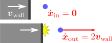
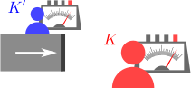

動いている壁（変形する壁も含む）に弾性衝突するボールの運動
を計算したい。
前章との違いは、壁が動いているという点のみなので、弾性衝突公式（＝弾性衝突の前後での速度変化を与える公式）がどう変わるかを考えればよい。それ以外の計算手順は前章と同じである。
弾性衝突公式は、相対性原理から求められそう

まず、簡単な例として、右図のように静止しているボール（
）を考え、これに、速度
を持つ壁がぶつかってくる場合を考える。この場合は弾性衝突条件が推測でき、衝突後のボールの速度
は、壁面の速度
の2倍になる：
これは、実験で検証することも容易である。逆に、ゼロ弾性衝突（＝全く跳ね返らないような衝突）の場合には、壁に接触したままになるので
となる。
このように、壁が動いている場合、たとえ弾性衝突であっても、衝突の前後で速度の大きさが変化する。よって、前章で述べた弾性衝突条件
はそのままでは成立しない。しかし、この結果が使えるようにする方法がある。それは、壁とともに動いている観測者
を考えることである（右図）。
から見れば、壁は静止しているので、前章の結果が使えるというわけである。（詳しくは後述するが、このような手法がうまくいくことを相対性原理という。）
よって、「
で成り立つ弾性衝突公式」を元の観測者
から見たものに座標変換することにより、「
での弾性衝突公式」を導く、という戦略をとることにしよう。ただし、目的の弾性衝突公式には、壁面の速度
が現れるはずなので、
を（壁の形状を表す拘束条件
から）導く公式も必要となる。これらを踏まえてこの章では、以下の3つの節に分けて議論を行う：
相対性原理による弾性衝突公式の導出壁面の速度の導出ボールの運動の計算
5.1相対性原理による弾性衝突公式の導出
この節では、壁とともに移動する観測者を経由することで、弾性衝突の公式()を求める。ただし、壁の速度
はまだ未知である。
壁とともに動く観測者 から見た衝突の公式：式()
冒頭でも述べた様に、まず着目するのは、「本来の観測者
から見て動いている壁であっても、壁面の速度
と同じ速度で動いている別の観測者
からは、壁面は静止して見える」という事実である（右図）。
から見れば、壁面は静止しているので、前章の結果が使えるだろう。これを、相対性原理という（以下の【5.1-注1】）。
これにより、
から見たボールの運動は、前章の結果をそのまま使って計算できる。即ち、反射速度
は以下で与えられる：（「
」は
から見た量であることを表す）
よって、この式を、元の観測者
から見たものへ変換してやれば、目的の弾性衝突公式が得られることになる。
ただし、
が一定でない場合（＝壁が加速度運動している場合）、壁面上の観測者も加速度を持つことになるので、相対性原理は成り立たない。しかしその場合でも、「衝突の瞬間の短い時間間隔において衝突点での壁面が静止して見える」ような等速度の観測者は、常に存在する。この観測者を
とすれば、式()がやはり成り立つ。これは、衝突の際には、壁面の加速度を考慮する必要はなく、壁面の速度だけで十分だということである。直感的には加速度にも依存しそうだが、上下に振動する床にボールを当てることを考えると分かりやすい。床が上昇していればボールの勢いは増大し、下降していれば減少する。上昇しきった・下降しきった時はその中間なので勢いは変化しない、即ち、加速度ゼロで静止し続けている場合と同じであり、加速度には依存しない。
【5.1-注1】相対性原理

ニュートンの運動方程式
が成り立つ観測者を、慣性系という[1]。慣性系に関して、以下の直感的にももっともらしい性質が成立することを、相対性原理という：
- ある系
が慣性系であれば、
に対して等速度で移動していて（＝速度の大きさと向きが一定）、かつ、自転していない系
も慣性系である。
- 全ての慣性系において、物理法則は全く同じである。即ち、右上図のように、慣性系
においてある実験装置（計器の図が装置全体を表している）を作動させた結果と、その装置を丸ごと別の慣性系
に持って行って作動させた結果は等しい[2]。
補足
[1] 今まで気にしてこなかったが、逆に、非慣性系（＝ニュートンの運動方程式がそのままでは成り立たない系）も存在する。これは右図のように、観測者自身が自転・加速度運動している場合である。非慣性系では、力が働いていない物体であっても加速度を持っているように見える。例えば、地球は自転しているので、地上の観測者は厳密には非慣性系であり、それにより、力を受けていないはずの夜空の星が、24時間かけて地球の周りを1周しているように見える（円運動には加速度が必要）。とはいえ、キャッチボールのように短時間で終わる実験では地球の自転の影響は無視できるし、実際これまでそうしてきた。
[2] 日常的に言えば、乗り心地の良い電車の中で目を閉じている時、電車が止まっているか／等速度で動いているかは判別できないということである（自分自身が実験装置になっている）。
相対性原理を検証するための1つの方法として、日時を変えて同じ実験を繰り返すことが考えられる。地球の自転により、地球上の同一地点であっても昼と夜では約
の相対速度が生じる（赤道上の場合）。また地球の公転により、夏と冬では約
の相対速度が生じる（右図）。従って、もし相対性原理が破れていれば、時刻や季節によって実験の結果が異なるはずである。しかし、そのような結果は観測されていない。
速度 の変換則：式()
壁とともに動いている観測者
から見た時の弾性衝突の公式()を、元の観測者
での式（＝「
」がつかない式）に変換したい。そのためには、同式に現れる2種類の量
と
の変換則が分かればよい。
まず、速度
の変換則である。座標
の変換則を考え、それを時間微分すればよい。
の関係式は、
の移動速度が壁面の速度
であることより、単純に以下のようになる：（以下の【5.1-注2】のガリレイ変換()）
速度
の変換則は、これを時間微分すれば得られる：
これは直感的にも自然である。
【5.1-注2】ガリレイ変換：式()
2つの慣性系
を考える。右図のように、
は「
から見て一定の速度
で動いている」とする。
において両者の座標系は一致するとする[1]。
この時、
から見たある点の座標を
とし、同じ点を
から見た時の座標を
とする。すると、
と
の間の関係式は、右図の3つのベクトル
が3角形を構成することから、以下のようになる：
この座標変換をガリレイ変換という[2]。
補足
[1] これは単に、簡単のためである。一般的には、
において原点が別々の場所にあってもよい。実際、
から見た「
での
の原点の位置」を
と置けば、式()は、
となる。だが、
をどこに取るかは任意なので、
としておけば十分である。また、軸の方向も、
の間で定数角度だけ異なっていてもよいが、特に重要ではないので、一致するとしている。
[2] ガリレイ変換()は、上述の相対性原理【5.1-注1】と整合している。実際、相対性原理は
においてもニュートンの運動方程式が成り立つことを要求するが、右図のように、
において
で表される運動を、
から見ると
となり、確かに、
でもニュートンの運動方程式
が成り立っている。特に、力
は、慣性系によらず同じ値になることも分かる。
の変換則：式()
後は、式()に含まれる
を
で表せばよい。とはいえ、計算しなくてもその答えは直感的に分かる。実際、壁の向きは、観測者の速度には依存しないはずなので、
となりそうである。これを示そう。
まず、動いたり変形したりしている壁を考えているので、拘束条件
の関数形は、時刻
とともに変化することになる：
は予め与えられているとする。例えば、水平な床が上下（
軸方向）に振動しているような場合であれば、
のようになる（
は定数）。一方、動いている観測者
から見た壁の形状についても、同様に
の形で表される。
と
の関係式を求め、それを空間微分すれば求める変換則が得られる。
さて、ガリレイ変換()：
の関係式を満たす任意の
に対して、両者は観測者が異なるだけで空間上の同じ点を表しているので（右図）、式()と式()は「両方とも成立する（＝壁の外にある）」か「両方とも成立しない（＝壁の中にある）」かのどちらかである。要するに、この
について、
と
の符号が一致すればよい。そのような
として、単純に
に一致するものを取ればよい：
（前章でも述べたように、拘束条件の関数形には任意性があるので、
が与えられていても、
は一意的には決まらない。ここでは、正当な
として、最も自然な式()を採用したということである。）後は、この関係式に注意して、
を
によって表すと、以下のようになる：
式微分の連鎖則を使ってでの微分にする（以下の【注】の式）
よって、点
における
と、それに対応する点
における
は等しい：
（完全に一致したのは、式()となるように
を取ったからである。一般には大きさまでは一致しないが、式()でに代入してしまえば正規化した形になるので、影響はない。）
【5.1-注3】合成関数の微分公式（連鎖律）
任意の多変数関数
を考える。
が
の関数
になっている場合、
は
の関数とみなすこともできる：
。この時、
を
で微分することができ、以下が成り立つ（連鎖律）：
は前章の【4.2-注2】で述べた全微分である。
また、
と
が
にも依存する場合、即ち
となる場合であっても、
での偏微分に対して同じ式が成り立つ：
導出
全微分
の定義式は、1次近似を用いてそれぞれ以下のようになる（章章の【4.2-注2】）：
右式を左式に代入して
を消去すると
となる。
は、
を1次近似したときの
の係数なので、緑字部分に一致する、即ち、式()が成り立つ。式()についても同様に、
を1次近似して
の係数を見れば導ける。
弾性衝突の公式：式()→壁面の速度 を求めたい
以上により、
から見た衝突の公式()に、
と
の変換則、それぞれ式()と式()を代入すれば、元の観測者
から見た衝突後の速度
の公式が得られる：
後は、
を求めればよい。
5.2壁面の速度 の導出
残る課題は、式()の未知数である壁面の速度
を、拘束条件から求めることである。そうすれば、弾性衝突公式()が確定する。
この節では、
を求め、最終的な弾性衝突公式()を導く。
は壁面に垂直：式()
衝突点における壁面の速度
を、拘束条件
から求めたい。まず、右図のように、
は、壁面に垂直であるとしてよい（式()の導出でもこの性質を使った）。というのも、前章と同様に、壁とボールの間に摩擦がないという理想的な状況を考えているので、壁面と平行な方向の壁の運動は、ボールの運動には影響しないので無視できるからである。（拘束条件()の形で壁を表した場合、これにはそもそも壁面と平行な方向の速度の情報が含まれていない。例えば、水平な床が前後左右に動いていても、見かけの壁の位置は変化しないので、
は静止している場合と変わらない。）
前章の4.1節で述べたように、
の微分
は壁面に垂直である。従って、
は、
と平行である：
未知数は、
の大きさに対応する、
だけである。
あるいは、式()は、以下のようにもかける：
（
を
方向に正射影しても変化しないということである。）これを使うと、式()はもっと簡単になる：
は式()
さて、
を決めるには、あと1つ、
の大きさに関する条件があればよい。まず、時刻
において壁面上にあった点
は、
秒後、
だけ移動する（右図）。移動後の点
は壁面上に留まらなければならないので、拘束条件
を満たす。これが、壁面の速度
の大きさに関する条件を与える（
が大きすぎても小さすぎても、壁面からずれてしまう）。
上式()を1次近似すると、以下のようになる（以下の【5.2-注1】）：
よって、
部分は0でなければならない：（
）
これが求めたかった条件である。
後は、式()の両辺に
をかけて、式()を使えば、
の形に変形できる：
【5.2-注1】関数 の1次近似
時刻
に依存する関数
の1次近似は、以下のようになる：（右辺は
での値）
導出
変数
をまとめて
と置と、
は
と書けるので、その1次近似は、前章の【4.2-注2】により
となる。これを、
部分と
部分に分けて書いたものが式()である。
衝突公式（完成版）
式()と式()をまとめると、時間変化する壁との弾性衝突における反射速度
は、最終的に以下で与えられることになる：
なお、ここまで弾性衝突条件を露には考えてこなかった（必要がなかった）。弾性衝突条件を実際に書下してみると、以下の【5.2-注2】のように、壁との相対速度が保存するという形になる。この弾性衝突条件と、ダランベールの原理
を連立して、前章の【4.1-注3】と同様に式()を導くこともできる。
【5.2-注2】壁が時間変化している場合の弾性衝突条件
壁が速度
で動いている場合、弾性衝突条件は、以下のようになる：
即ち、ボールと壁との相対速度の大きさは、衝突の前後で変わらない。
導出
系での弾性衝突条件
に、速度のガリレイ変換()：
を代入するだけである。
5.3ボールの運動 の計算
弾性衝突公式()が得られたので、前章と同じように計算できる。
この節では、まず、ボールの運動
の計算方法についてまとめる。その後、具体的な計算を2つの例（上下振動する床、変形する床）に対して行う。
ボールの運動 の計算方法
時間変化する壁面との衝突を含むボールの運動は、前章の4.3節の計算とほぼ同じである。違うのは、弾性衝突公式が、式()に置き換わることだけである。
例題1：上下振動する平坦な床との衝突
時間変化する壁面の例として、右図のように平坦な床が上下に振動している場合を考える。拘束条件
およびその微分
は、以下のようにとれる：（
は定数）
これらを式()に代入すれば、衝突後の速度
は以下のように計算できる：
数値計算を行うと右図のようになる。
例題2：変形する床との衝突
変形する床の例として、2次元平面において、右図のように以下のような拘束条件をとる（2次元にしたのは単に式を見やすくするため）：
のグラフが壁の境界になっている。このグラフはのこぎり状の形状であり、定数
は大きくなるほどそれぞれ、
：高さの変化が大きくなり、
：振動が速くなり、
：歯が角ばっていき、
：階段の横幅が小さくなる。なお、
は双曲線関数である（以下の【5.3-注1】）。
微分
は、以下のようになる：
これらを式()に代入すれば、衝突後の速度
を与える式が求まる。特にきれいになるわけではないので、結果は省略する。（数値計算を行う場合には、代入処理はプログラム中で行えばよいので、書き下す必要はない。）
3次元の場合も同様であり、数値計算を行うと右図のようになる。
【5.3-注1】双曲線関数
双曲線関数について、必要な式をまとめておく：